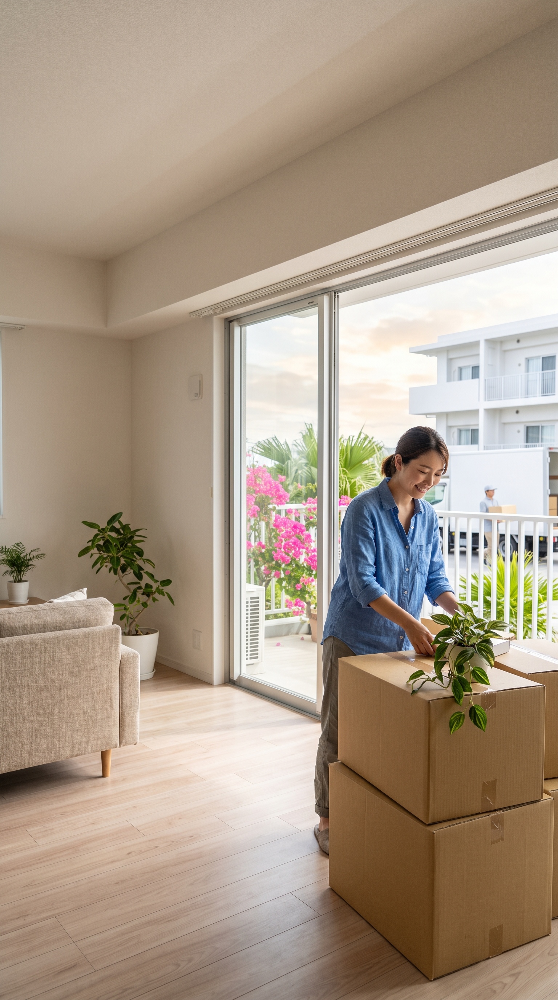
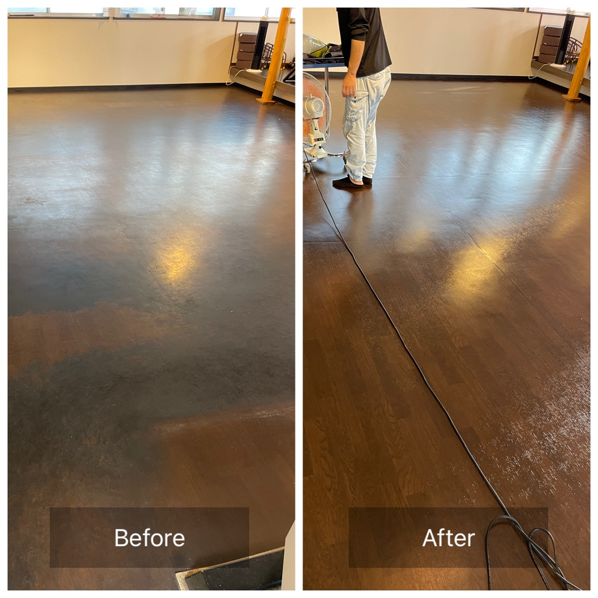
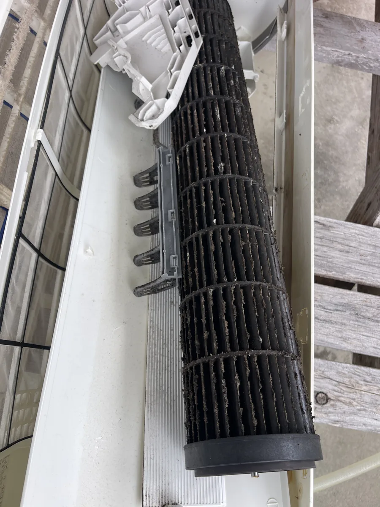
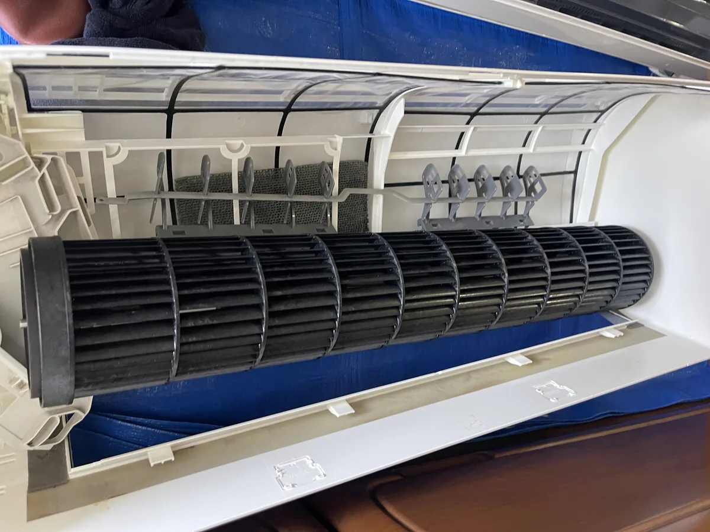
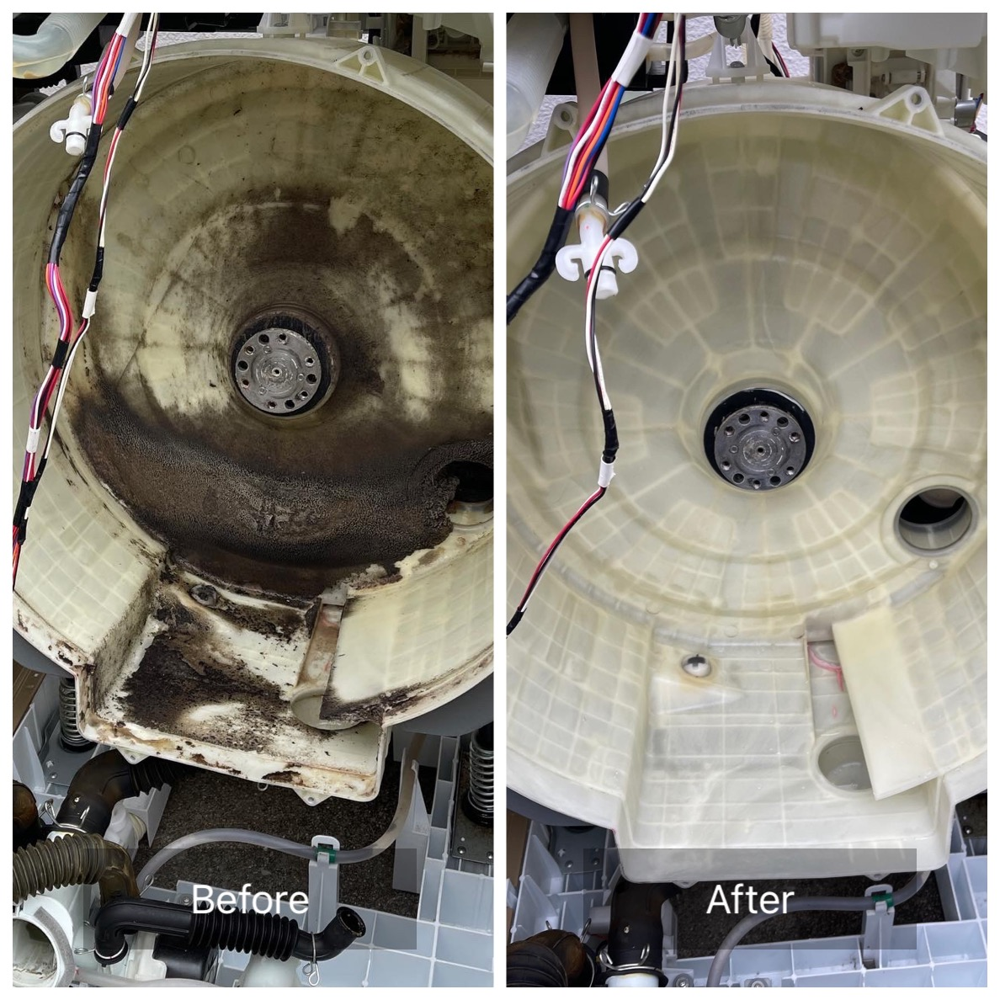
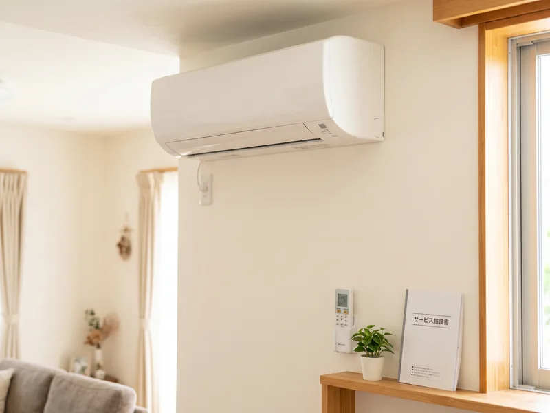

別々に頼むと
探す、説明する、見積りを待つ、日程を合わせる。これを業者の数だけ繰り返します。
引っ越し・新生活の相談窓口
受付 9:00〜18:00

運搬・退去清掃・エアコン移設・家電の買替え・設置まで。
必要なことを、BCサービスにまとめて相談。
何社も探して、同じ説明を繰り返す手間を減らします。
引っ越しの前に
家族の荷物と、冷蔵庫・洗濯機を、誰に頼むか。
取外しと取付を、引越しと別に頼む。
旧居を、どの範囲まできれいにするか。
洗濯機も冷蔵庫も、決めるのが後回しになる。
届いてから、また誰かを探す。
同じ話を、何社にも繰り返す。
家族の引っ越しは、業者探しと段取りだけで疲れます。
面倒の正体
引越し、エアコン、清掃、家電、電気。連絡先が分かれると、電話も見積りも日程も、全部ばらばらです。
探す、説明する、見積りを待つ、日程を合わせる。これを業者の数だけ繰り返します。
最初の相談窓口を、ひとつに。
必要なことを、同じ窓口で整理します。
何社も探して、同じ内容を何度も説明する手間を減らします。
あるご家族の引越し
30代半ばのご夫婦と、保育園児2人。共働きです。持ってきた洗濯機が、設置スペースにも、搬入経路にも入りませんでした。
「洗濯機が新居に入らないと分かった時も、その場でサイズを測って新しい機種を探してくれて助かりました」
実は最初のご相談は、エアコンクリーニングでした。
話していくうちに、エアコン2台の移設相談になりました。年式、タイミング、移設費用を見て、新品2台への買替えと、既存1台はクリーニングして移設、に決まりました。そのあとが、引っ越し当日です。
引越し当日
4人家族に合う容量も見て、候補を3機種ほど提案。新しい洗濯機1台に決まりました。
その後
新しい洗濯機は、新居へ搬入・設置できました。使う予定だった洗濯機は、クリーニングしてご実家へ届けられました。ご実家も、設置場所と搬入条件を事前に測り、大丈夫と判断して案内しました。ご実家の古い洗濯機も整理できました。
新居で
新居ではコンセント不足が分かり、急遽増設できました。
入居後
基板を探して入手し、修理できました。相談先は、最初のままです。
引っ越しは、予定通りにいかない。
だから、予定外まで相談できる窓口を。
困るたびに、また別の業者を探さなくていい。ここまでまとめて相談できるのが強みです。このご家庭で新しく入れたエアコンと洗濯機は、将来のクリーニング20%OFF。その後、ご実家のエアコンクリーニングも同じ窓口でご相談いただきました。
家族の引っ越し
何社も探さなくていい。窓口ひとつで、
価格もまとめて見直しやすく。
引越し前
片付けと退去清掃。
エアコンの取外し。
買替えの相談も。
引越し当日
荷物と大型家電。
必要な手配もまとめて。
新居
エアコンの取付・移設。
家電の設置と、
照明の電気工事。
必要なら買替え
新品の家電も相談。
量販店を何軒も
回らなくていい。
入居後
お手入れ、修理、
買替えも同じ窓口。
エアコン・洗濯機
クリーニング20%OFF。
担当
最初の相談は、BCサービス代表の照屋昴が伺います。

必要な範囲だけでも相談できます。


使い続ける一台も、入居前に洗えます。

縦型も、ドラム式も。
必要なら買替え
運ぶか、買い替えるか。引越しのタイミングで、一緒に考えられます。量販店を何軒も回らなくていい、という相談です。

エアコン、冷蔵庫、洗濯機、テレビ、照明。新品の価格は機種ごとに変わるため、このページに固定価格はありません。
家電もLINEで相談するおまとめキャンペーン
BCサービス経由で購入する対象家電に、10年保証を無料で付帯します。
現金払い または 銀行振込
対象商品・保証内容・適用条件があります。詳しくは照屋まで。
移すか、新しく買うか。
持ち込みも、新しい一台も。
サイズと設置場所から。
置く場所が未定でも大丈夫。
新しい部屋の明るさまで。
入居後も、同じ窓口
お手入れも、修理も、次の買替えも。引っ越し完了で終わりにしません。
入居後のお手入れ特典
その後のお手入れも、同じ窓口で相談できます。先ほどのご家庭で新しく入れたエアコンと洗濯機も、この対象です。
LINE
分かれば、エアコン台数・退去清掃・買替え予定も一緒に送ってください。
最初はこの2つ
分かれば、こちらも
相談の前に
ご相談の窓口はBCサービスです。進め方は事前にご案内します。
運搬、退去清掃、エアコンの取外し・移設・取付、家電の移動と設置、必要な買替え、入居後のお手入れまでです。全部が決まっていなくても、分かるところから整理します。
内容に応じて専門スタッフや提携先と連携する場合があります。ご相談窓口はBCサービスです。
はい。相談と見積りは無料です。まだ頼むと決めていなくても大丈夫です。必ず安くなる、というお約束ではありません。金額は内容を見てご案内します。
はい。まずは引っ越し予定日の目安と、今の地域から新居の地域だけでも送れます。
はい。買替えだけ、清掃だけ、エアコンだけでも相談できます。
相談は沖縄本島です。拠点は南城市です。地域をまたぐ場合は、区間や日程を確認してご案内します。
荷物の運搬は、内容に応じて、許可を持つ運送事業者を手配します。運送契約と補償条件は、利用する運送事業者の条件を、事前にご案内します。BCサービスは、引越し前後の相談窓口として、エアコン・家電・清掃・電気工事などをまとめて整理します。
対象は、エアコンクリーニングと洗濯機クリーニングです。適用の条件は、相談のときにご案内します。
運搬、退去清掃、エアコン、家電。
全部を別々に探す前に、まずBCサービスへ相談してください。
必要なことを整理するところから始めます。